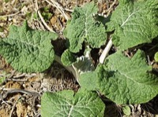

ごぼう（牛蒡）の生産量
いちばん多くとれる都道府県
ごぼうが日本でいちばん多くとれるのは青森県です。4万6,700 tで、全国（11万7,100 t）の40%を占めます。

| 順位 | 都道府県 | 収穫量 | 全国に占める割合 |
|---|---|---|---|
| 1位 | 青森県 | 4万6,700 t | 40% |
| 2位 | 茨城県 | 1万2,900 t | 11% |
| 3位 | 北海道 | 9,970 t | 8.5% |
この数字について
- 分類：キク科
- 全国の収穫量：11万7,100 t
- この数字が表すもの：収穫量（畑や田でとれた重さ）
- 調査：作物統計調査 作況調査（野菜） 令和6年産
- 8県分を調査（調査していない県は順位に入りません）